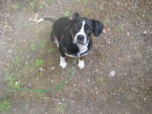

Hey, lover of cuteness! Sign in with Google+ to improve your experience.
Is too cute!
A gallery of super cute stuff.
Here is a cute picture of a puppy falling asleep.
Here is a cute picture of a puppy who wants food.

Please don't break up with us!
Good XP
Better XP
Awesome XP